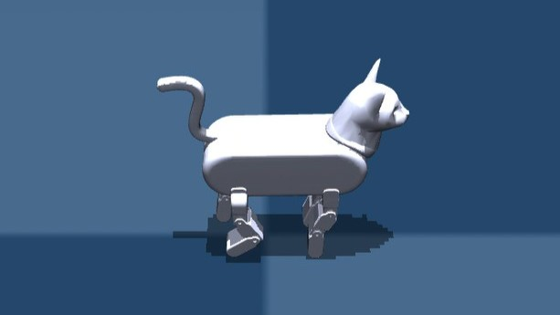
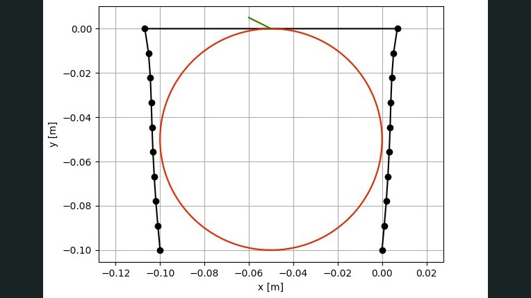
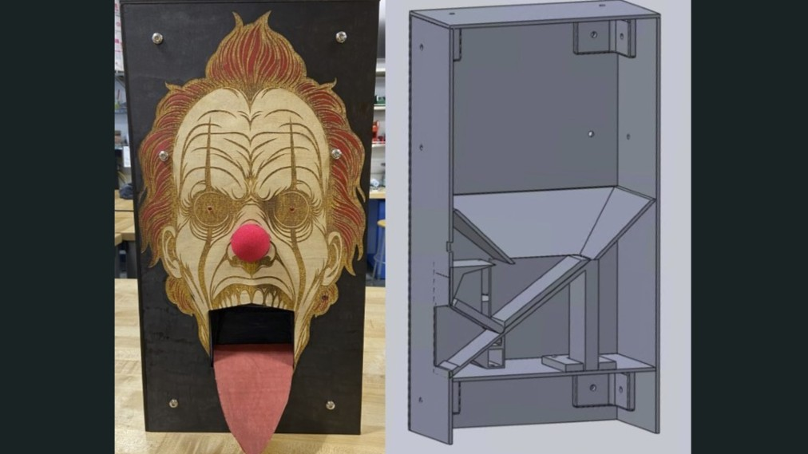

Hi, I'm Jessica! I am a robotics engineer who loves building systems that move with intention. I specialize in simulation, control, and mechanical prototyping. I earned my M.S. in Mechanical and Aerospace Engineering from UCLA and my B.S.E. in Mechanical Engineering from Duke University. I currently contribute to the UCLA Robotics and Mechanisms Lab, where I work on humanoid motion validation and safety through simulation. My experience spans from soft robotic actuators to quadruped locomotion and industrial robot simulation. Take a look at some of my experience below!
Projects
Quadruped Robot - The Meow Machine
Built a 4-legged robotic cat with 3D-printed limbs and wireless Raspberry Pi control for stable locomotion.
Designed and 3D-printed articulated linkages for feline-inspired motion
Programmed servo actuation logic in Python
Enabled wireless control and remote debugging over SSH
Modular Assembling Robot System
Developed modular robots capable of self-assembly using Arduino, magnetic alignment, and AprilTag localization.
Fabricated units capable of autonomous assembly/disassembly
Used AprilTags and OpenCV for vision-based localization
Implemented wireless control using WiFi-enabled Arduino microcontrollers
Candle Lighting Robot
Designed a 4-DOF manipulator with gravity-compensated PD control and OpenCV-based wick localization pipeline.
Developed inverse kinematics and PD controller for precision
Implemented dynamic trajectory generation with error under 1°
Built a real-time visual servoing system to localize wicks in 3D space
Color Sorting Robot Simulation
Simulated a color-sorting Panda robot using ROS, Gazebo, MoveIt, and OpenCV achieving over 95% accuracy.
Integrated ROS pipeline with Gazebo simulation environment
Developed OpenCV color detection and segmentation routines
Used MoveIt for motion planning and collision checking
Chess Playing Robot
Engineered a 4-DOF robot cabable of playing chess through a pick and place pipeline.
Designed a claw-like end-effector cabable of grasping chess pieces
Coded motion control using the robot's inverse kinematics and locations of the chess board
Used modular linkages allowing the manipulator length to be adjusted for different chess boards
The Butterfly Blade
Fabricated a new spinning and locking blade mechanism inspired by a traditional butterfly blade.

Walking Quadruped RL Training
Overview
Flexure Based Micro-Mirror
Overview
Scara Robot Trajectory Generation
Overview

Contact Modeling Parallel End-Effector
Overview
Magnetic Levitation Device
Overview

Halloween Candy Dispenser
Overview
Webcam Calibration
Overview
Candle Wick Detection
Overview
PWM Controller
Overview
Tiny Boat
Overview
Skills
ROS / ROS2
URDFs
Isaac Sim
Gazebo
MuJoCo
RViz
MoveIt
OpenAI Gym
Python
C++
MATLAB
Linux
Git / GitHub
Docker
Conda / Virtual Environments
SolidWorks / CAD
Arduino
Raspberry Pi
Machining
3D Printing
Circuit Design


{kind=link}
{kind=link}
{kind=link}
{kind=link}
{kind=link}
{kind=link}
{kind=link}
{kind=link}
{kind=link}
{kind=link}
{kind=link}
{kind=link}